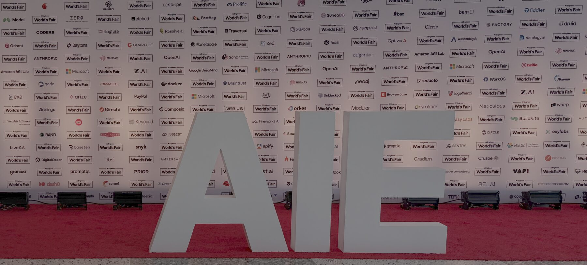
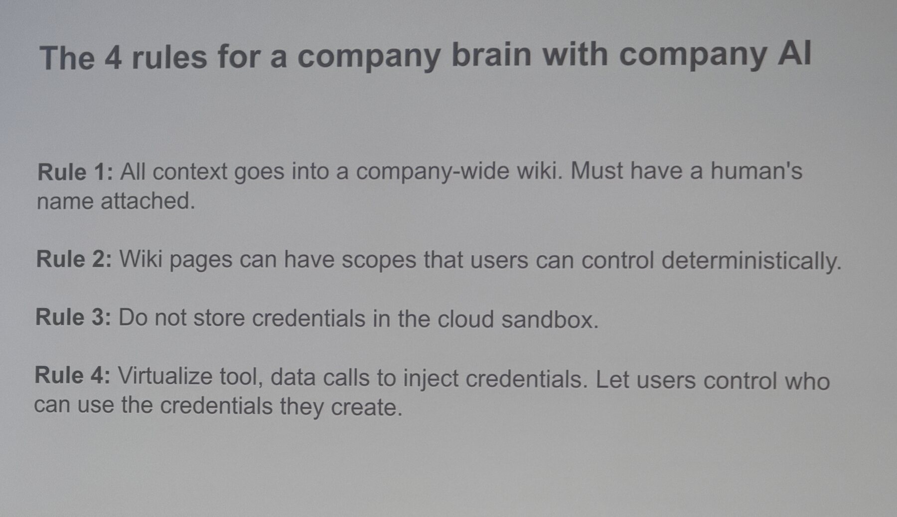
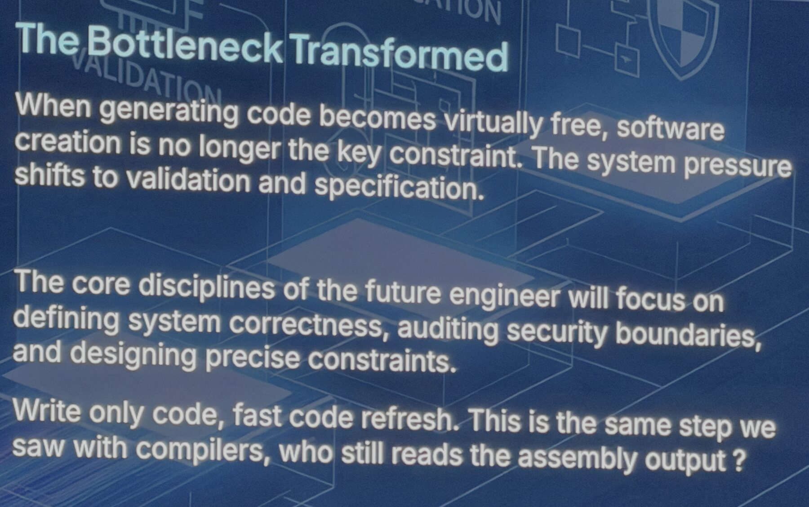
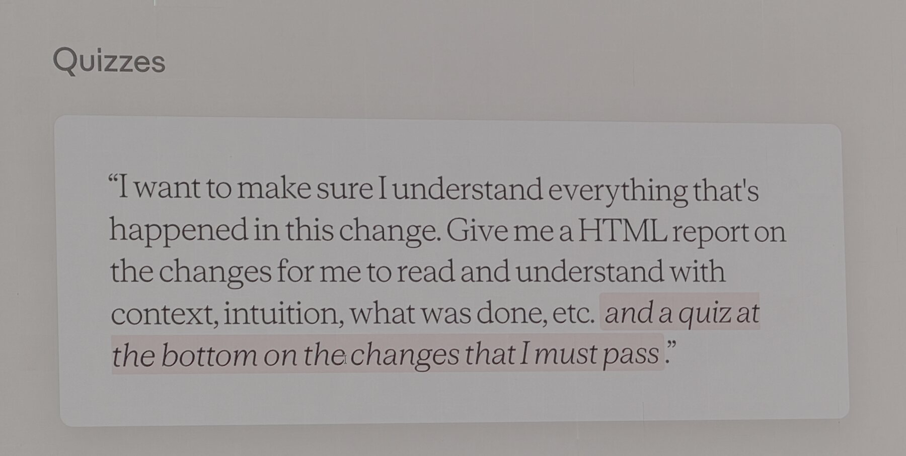

<figure class="exhibit"> <p></p> <figcaption>AI Engineer World's Fair · San Francisco</figcaption> </figure>
# The Ownership Problem <p class="attr">Minneapolis AI Engineer Meetup · August 12, 2026<br>Mike Halagan · Local AI</p>
<blockquote> <p class="line">"Show me the files I edited recently."</p> </blockquote>
## Five weeks later <blockquote> <p class="stmt-sm">"Your company brain will leak secrets."</p> </blockquote> <p class="stmt">Skills · Memory · Compute · Output</p> <p class="ask">Who owns them?</p> <p class="attr">Tanmai Gopal · Day 2</p>
<p class="act">Who owns the memory?</p>
<blockquote> <p class="stmt">Grow a company brain.<br>Don't build one.</p> </blockquote> <div class="flow"> <div class="flow-step"><span class="n">01</span><span class="t">Agent <em>suggests</em> with scopes</span></div> <div class="flow-arrow">→</div> <div class="flow-step"><span class="n">02</span><span class="t">Human accepts</span></div> <div class="flow-arrow">→</div> <div class="flow-step"><span class="n">03</span><span class="t"><strong>A name is attached</strong></span></div> </div> <p class="attr">Gopal · Day 2</p>
<figure class="exhibit"> <p></p> <figcaption>The 4 rules for a company brain — Tanmai Gopal, Day 2</figcaption> </figure>
## What rollouts actually look like <p class="stmt-sm stack">Chatbot only.<br>No data connections.<br>No SharePoint.</p> <blockquote> <p>"AI agents don't read your policy docs. They hit your APIs."</p> </blockquote> <p class="attr">Day 3</p>
<p class="act">Who owns the skill?</p>
## The flywheel <div class="flow"> <div class="flow-step"><span class="n">01</span><span class="t">Agent run</span></div> <div class="flow-arrow">→</div> <div class="flow-step"><span class="n">02</span><span class="t">Trace</span></div> <div class="flow-arrow">→</div> <div class="flow-step"><span class="n">03</span><span class="t">Distilled skill</span></div> <div class="flow-arrow">→</div> <div class="flow-step"><span class="n">04</span><span class="t">Org library</span></div> <div class="flow-arrow">→</div> <div class="flow-step"><span class="n">05</span><span class="t">MCP gateway</span></div> <div class="flow-arrow">→</div> <div class="flow-step"><span class="n">06</span><span class="t">Every agent</span></div> </div>
## So I started building it <blockquote> <p class="stmt-sm">Since July: building evaluations around our own skills.</p> </blockquote>
<p class="act">Who owns the output?</p>
## Everyone drew the same machine, then told us why it fails <p class="stmt-sm">Day 2's main stage was software factories, top to bottom.</p> <div class="entries"> <div class="entry"><span class="who">Sonar — AC/DC</span><p class="seq">Guide<span class="a">→</span><strong>Verify</strong><span class="a">→</span>Solve</p></div> <div class="entry"><span class="who">Warp</span><p>Self-improving factories: agents that update skills, cross-harness memory, feedback loops</p></div> <div class="entry"><span class="who">Factory</span><p>The differentiator is infrastructure: machine-readable codebases, deterministic APIs, agent-addressable CI/CD, <strong>and permission models granular enough to scope exactly what an agent can touch</strong></p></div> </div> <div class="entries"> <div class="entry"><span class="who">Kyle Mistele, HumanLayer, 3:45pm</span><p>Ran the lights-off factory six months. Bad code compounded. Agents created problems agents couldn't solve. Threw it away.</p></div> <div class="entry"><span class="who">Dex Horthy, HumanLayer, 4:30pm keynote</span><p><em>Why Software Factories Fail</em></p></div> </div>
<figure class="exhibit"> <p></p> <figcaption>The Bottleneck Transformed — photographed at the conference</figcaption> </figure>
## Verifiers are king <p class="stmt-sm">Hallucination is not a temporary bug.<br>As models get more capable, failures get <strong>more frequent and more convincing.</strong><br>Cognitive surrender among reviewers is an acute risk.</p> <blockquote> <p>"Most organizations still treat AI as a productivity tool rather than a governance challenge."</p> </blockquote> <p class="attr">Tariq Shaukat, CEO, Sonar — <em>In the Land of AI Agents, the Verifiers Are King</em><br>Day 3 Main Stage keynote</p>
<p class="act">Who owns the compute?</p>
## I spent all of Thursday on this <p class="eyebrow">Thursday, Day 4 — local AI, all day</p> <p>Enterprises don't want to pay frontier prices for every workload.<br>They don't want to be told what to run.<br>They don't want the rug pulled.</p> <blockquote> <p class="stmt-sm">"We're in the 90s of Linux, but for local AI."</p> </blockquote>
## Why it's suddenly working <p class="stmt-sm">Small isn't beating big. Newer efficient is beating older inefficient.</p> <p class="note-line">Better data · training recipes · tokenizers · post-training · eval loops</p> <div class="group"> <p>Qwen 4B ≈ GPT-4o in your pocket</p> <p>GB300 already runs 5.2-class frontier</p> <p>Panel forecast: GLM-5.2-class on a 32GB GPU within ~18 months</p> </div> <div class="group"> <p><strong>Qdrant, Day 3:</strong> 540B params to clear 60% MMLU in 2022 → 3.8B two years later. <strong>142x.</strong></p> <p class="dim">They called the gap "the lag" — frontier capability to hardware you own.</p> </div>
## What it actually takes <p class="stmt-sm">A bigger model quantized to 4-bit beats a smaller model at 16-bit.</p> <div class="group"> <p>First and last layers matter most — you can't quantize uniformly</p> <p>NVFP4 micro block scaling · linear-attention architectures resist quantization</p> <p>Next frontier: KV-cache compression, compaction plus quantization</p> </div> <div class="group"> <p>Decode is <strong>memory-bandwidth bound</strong>, not compute bound → your SLO sets your batch size</p> <p>GQA is a baseline, not an optimization · continuous batching · speculative decoding ~3x on coding</p> </div> <p class="open-q">Still open: fine-tune then quantize, quantize then fine-tune, or both together?</p>
## The honest part, and the stakes <div class="cols"> <div class="col"> <p class="col-head">What's still broken</p> <p>"This is way too complicated right now."</p> <p>Which hardware for which use case: unsolved.</p> <p>Which model for which job: routing is one piece.</p> <p>Don't make people think about quantization.</p> <p>Trust and safety are not the same thing.</p> </div> <div class="col"> <p class="col-head">What's coming</p> <p>Constant cost visibility is becoming a CFO problem. Jevons paradox.</p> <p>The vast majority of what we need AI for doesn't need a frontier model.</p> <p><strong>Only ~10% of people have ever run a model locally.</strong></p> <p>"The most consequential year for how AI gets distributed."</p> </div> </div>
## Understanding is the new bottleneck <p class="stmt-sm">Verifying correctness isn't enough.<br>You have to understand the work.</p> <p class="attr">Geoffrey Litt, Notion · Day 3</p>
| | Rented | Owned | Who owns it? | |---|---|---|---| | Skills | The model | The rituals nobody wants rediscovered | | | Memory | The model | Knowledge, expertise, norms | | | Compute | The API | The terms, the cost, and where it runs | | | Output | The generation | The verdict | |
<figure class="exhibit"> <p></p> <figcaption>Quizzes — photographed at the conference</figcaption> </figure>